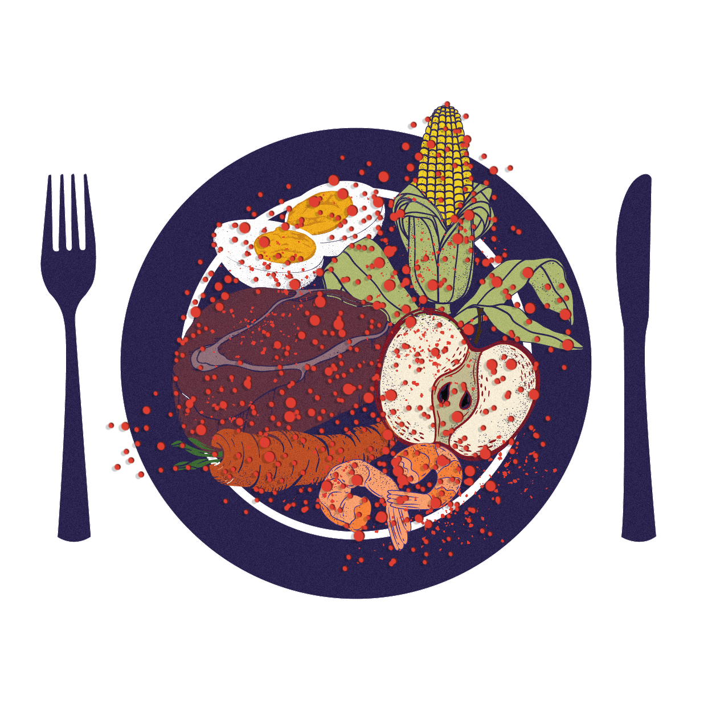

Som att rena havet
från salt
Den absurda kostnaden för "PFAS as usual"
Kostnadsuppskattningar:
Ali Ling / University of St. Thomas, School of Engineering, USA
Hans Peter Arp / Norges teknisk-naturvetenskapliga universitet -
Norges geotekniska institut
Raphaëlle Aubert / Le Monde
Eurydice Bersi / Reporters United
Text: Eurydice Bersi / Reporters United
Illustration: Georgina Choleva / Spoovio
Webbdesign: Dafni Karavola / Reporters United
Översättning till svenska: Aleksandra Pogorzelska
För 80 år sedan visste inte forskarna hur PFAS tillverkas. Nu kan världen inte bli av med dem.
Nästan varje PFAS-molekyl som någonsin tillverkats finns fortfarande där ute. De som har fallit sönder har bildat nya PFAS.
Evighetskemikalierna finns i jorden, i regndroppar, i vår mat, i vårt blod. De kan orsaka cancer, hormon- och immunstörningar och mycket mer.
PFAS är konstgjorda kemikalier som släpps ut i miljön från fabriker som tillverkar eller använder dem i sina industriella processer.
De släpps ut direkt i vattenströmmar och via skorstenar i rök som regnar ned över mark.
Avfall som innehåller PFAS läggs ofta på hög.
PFAS tränger sig in i människokroppen genom mat, luft och hud.
Vissa ansamlas och kan skada vår hälsa. En del utsöndras och hamnar i avloppsvatten.
Varje brand som någonsin släckts med PFAS-haltigt skum har släppt ut evighetskemikalierna i miljön.
Där finns de fortfarande kvar.
Kemikalierna gömmer sig i mark och byggnader, där de påverkar omgivande vatten, ekosystem och människor.
Många konsumentvaror innehåller PFAS. Sopor sönderfaller med tiden, men PFAS gör det inte.
De läcker ut från avfallsdeponier och förorenar grundvatten och floder. Gaser som släpps ut från deponier innehåller också PFAS.
Än idag sprids PFAS i många delar av Europa direkt på fält på minst fyra sätt:
1. Bekämpningsmedel med PFAS sprutas på grödor.
2. Avloppsslam som inte är kontrollerat för PFAS används som gödningsmedel.
3. Återvunnet vatten från avloppsreningsverk som inte kontrollerats för PFAS används för bevattning.
4. Små droppar som innehåller PFAS svävar i luften och faller som regn.
Kemikalieindustrin har känt till riskerna med PFAS i sju decennier.
När den första generationen PFAS stötte på patrull – som hot om rättstvister och förbud – svarade tillverkarna med att ta fram
mindre PFAS
som är lika oförstörbara och ännu mer rörliga. De finns nu överallt, särskilt i växter och vatten – och de ackumuleras snabbt. Att byta till ämnen som är minst lika farliga och hälsoskadliga kallas "falsk substitution".
Det är inte förvånande att PFAS hamnar på vår tallrik, i allt högre halter, som kommer att fortsätta stiga om inte tillverkningen av PFAS stoppas.
Att bli av med äldre PFAS
Kostnad: mellan 23 till 160 miljarder kronor
Journalisterna från Forever Lobbying Project har tillsammans med forskare räknat på den ekonomiska kostnaden för att få PFAS-krisen under kontroll.
De började med äldre PFAS, stora ”långkedjiga” molekyler som vars användning är begränsad eller förbjuden men som förblir i miljön.
I årtionden har dessa kemikalier använts för att tillverka stekpannor med non-stickbeläggning, livsmedelsförpackningar för engångsbruk och fläckbeständiga textilier. Experter kallar dem för PFAS 4:
PFOS, PFOA, PFNA, PFHxS.
Att städa upp de platser som är mest förorenade av långkedjiga PFAS i Europa skulle kosta
allt mellan 35 till 185 miljarder kronor under de kommande 20 åren.
Våra samhällen – bara i sällsynta fall förorenarna – måste betala dessa kostnader även om användningen av PFAS upphör omedelbart.
Om vi fortsätter att släppa ut evighetskemikalier kommer notan att mångdubblas.
Att bli kvitt alla PFAS
Kostnad: 23 biljoner kronor under 20 år
Kortkedjiga och ultrakortkedjiga PFAS, liksom TFA, är extremt rörliga och kan mycket lätt tränga in i cellerna hos levande varelser.
Dessa molekyler är så små att de passerar de flesta vattenfilter utan att stoppas
Det skulle kosta omkring
1.150 miljarder kronor varje år att avlägsna kortkedjiga och ultrakortkedjiga PFAS, även delvis, från miljön och förstöra dem.
Det är mer 23 biljoner kronor under 20 år.
Det är 23 000 000 000 000 kronor.
Vi kan inte avlägsna PFAS från mänskligt blod, havsskum eller regn. Men det finns mycket som kan göras.
Om EU agerar nu kan vi förhindra att halterna TFA och andra PFAS i vårt dricksvatten når skadliga nivåer.
En allians av evighetsförorenare hävdar att endast den tidigare generationen av PFAS är problematisk. De står bakom en omfattande
lobby- och desinformationskampanj
för att slå ut tänderna på det förbud mot PFAS som ligger på bordet.
Om de lyckas kommer vi alla att bli föremål för ett gigantiskt, oåterkalleligt experiment i planetär skala.